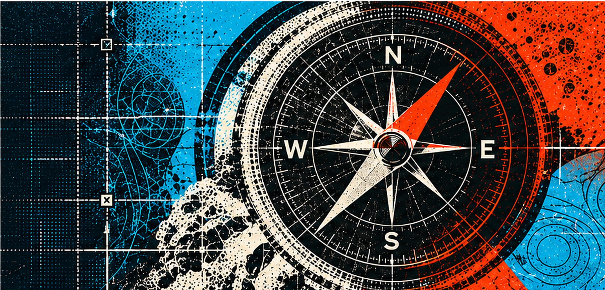
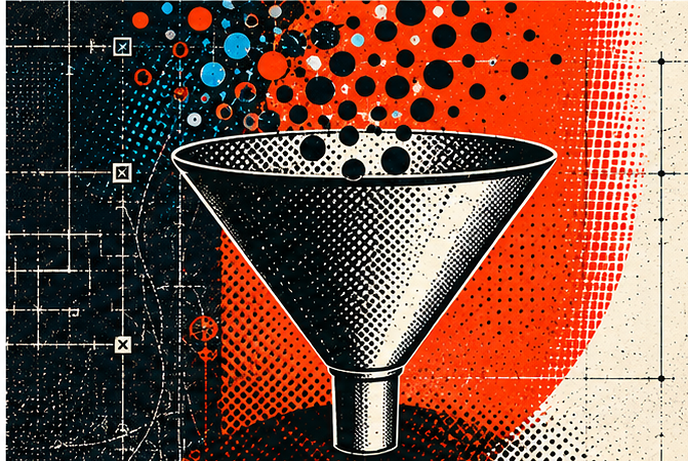
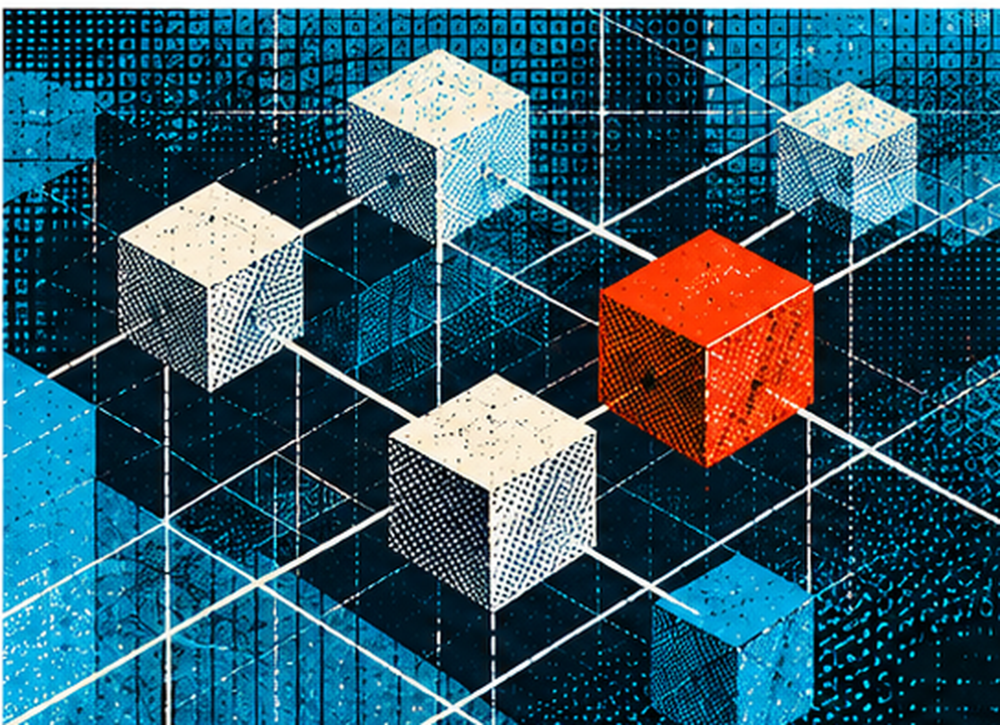
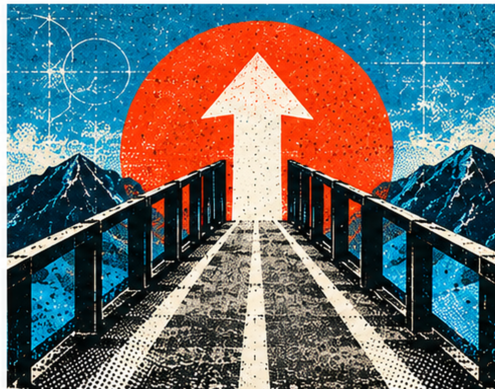
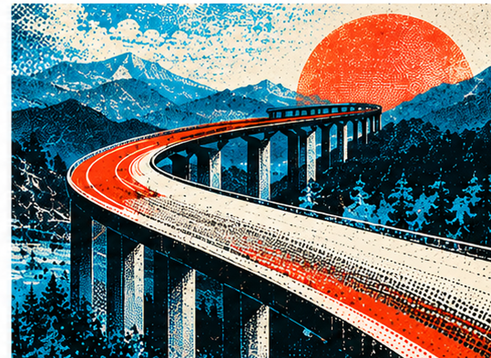

FRACTIONAL CMO
Senior marketing leadership at the level you actually need.

HOW WE WORK
Every challenge calls for a different mix of leadership, intelligence and execution. MODIS builds the whole around what the business actually needs.
Depending on the need, we can step in as a fractional CMO, fractional brand and marketing transformation executive or senior creative leader, working directly with your organization to provide the experience, objectivity and leadership normally associated with a full-time executive role.
Around that core leadership, we add the strategy, research, analytics, media, technology, production and creative expertise the work requires.
SPEAK TO THE TEAM →
Senior marketing leadership at the level you actually need.
Brand, creative and transformation expertise without adding another full-time seat.
Specialists and capabilities brought in when the work calls for them.
The right fractions working together as one connected solution.
THE PROCESS
We build the whole around the need, not around a fixed org chart. That means the right leadership, the right amount of time and the right capabilities, without paying for resources that aren't creating value.

DISCOVER
Before we decide what the team should look like, we understand what the business actually needs. The goals. The customers. The people. The data. The friction. The opportunities.
We work alongside your team to identify where senior leadership can make the biggest difference and what capabilities the challenge truly requires.
A clearer view of the business, the real challenge and the right level of leadership and expertise to move it forward.
DISTILL
More isn't automatically better. The goal is to determine what matters most and assemble the right combination of strategy, leadership, creative, intelligence and execution around it.
We connect the dots, establish priorities and create alignment around a clear path forward.
Sharper priorities. Better decisions. The right mix of capabilities. A plan people can actually execute.


DELIVER
We don't disappear after the recommendation. MODIS stays connected to the work, leading alongside internal teams, agency partners and specialists as the strategy moves into execution.
The mix can change as the work changes. The leadership and accountability stay connected.
Strategy that gets implemented, teams that move with greater clarity and work that performs better because the right people stay engaged.
THE MODIS MODEL
Andy and Chris are the core MODIS team. We stay close to the business, lead the thinking and remain accountable for the work.
Around that core, we add only what the challenge requires: strategy, research, data, media, technology, production or specialized creative expertise.
Some engagements need more strategy. Some need more creative leadership. Some need deeper intelligence or execution.
The mix changes. The core does not.
You're not paying for the whole bench. You're building the whole you need.
Andy + Chris. Senior marketing and creative leadership directly in the work.
The right mix of strategy, intelligence, creative and specialist expertise.
One connected solution built around the business need, not the overhead.
WHAT WORKING WITH US ACTUALLY FEELS LIKE
The people leading the engagement are the people doing the thinking, making decisions and working with your team.
You know who is leading, what is being solved and what happens next.
We bring in the capabilities the work requires, not a predetermined roster.
The mix can expand, contract or change as the business need changes.
The goal isn't dependency. It's stronger decisions, stronger systems and stronger work.
READY WHEN YOU ARE.
Start with the challenge. We'll build the right combination of leadership and expertise around it.
START A CONVERSATION →